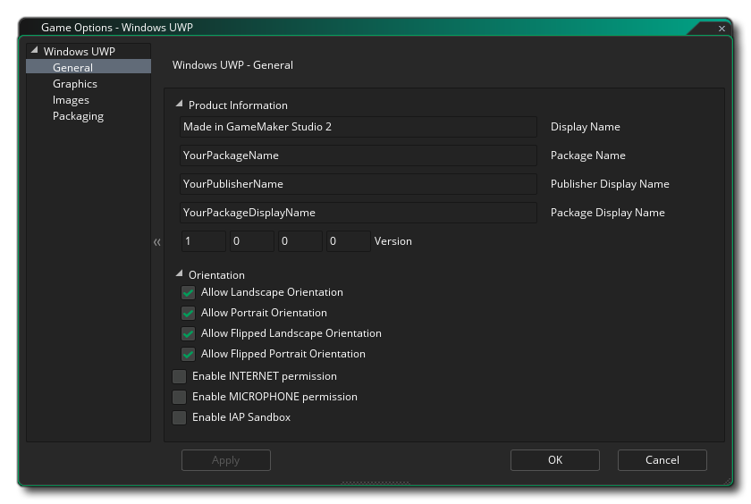
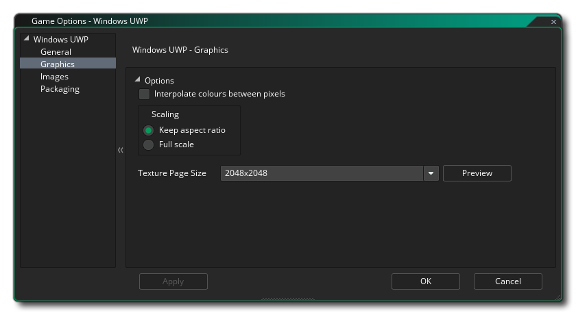

This section outlines the different options available to you that control how your UWP (Universal Windows Platform) game projects will be compiled. The different sections are:

The general section of the UWP options is where you can set the Product Information:
- Display Name: Specifies the friendly name for the app that is displayed to users (this string is localizable).
- Package Name: This is the name of the package that you have created and should match that used for the Developer key that you have created for the game (see the section on Packaging, below).
- Package Display Name: This is the "short name" of the package and should Ideally be the same as the Display Name
- Publisher Display Name: This is the name of your company or the person that you wish to associate as the games publisher.
- Version: The version number of your game.
After setting that up you can select the different Orientations that your game can be run on for the best user experience. The available options are:
- Landscape
- Portrait
- Landscape-flipped
- Portrait-flipped
By default all of these will be selected and you should de-select those that you do not require.
After setting the orientation options, you can then signal the different Permissions that your UWP app will need from the following options:
- Enable Internet Permission: Flags the game as having access to internet. This is off by default.
- Enable Microphone Permission: Flags the game as having access to the microphone of the device. This is off by default.
- Enable IAP Sandbox: Flags the game as using sandboxed In App Purchases. This is off by default.
Finally you have two options for setting the Target and Minimum Windows platform versions. In general you won't want to touch these and should leave them at their default values, but if you are having build issues (specifically, if you can't install the Windows SDK set by default, then you'll need to change these to what you have installed), then you may want to set these to other values. If you are unsure what values to set, then create a new UWP project in Visual Studio and have a look at what it sets the values to.

The graphics options are those that you should configure to determine how your game will use the graphics card of your target UWP device. The following options are included for you to modify:
- Interpolate colours between pixels: Turns on interpolation, which basically "smooths" pixels. For crisp pixel graphics, it should be off, but if you have nice alpha blends and smoothed edged graphics it is better left on.This is off by default.
- Display Cursor: When this option is enabled, the default OS cursor will be shown in your game. If this is disabled, then while the mouse is over the game window, there will be no visible cursor unless you have created one as part of the game project (this is on by default).
- Start fullscreen: When this is enabled, the game will start in fullscreen mode. Note that this may have no visible effect on anything other than a Windows 10 Desktop device.
- Allow fullscreen switching: When this is enabled, you can switch the game between fullscreen and windowed modes using the appropriate shortcuts. Note that this may have no visible effect on anything other than a Windows 10 Desktop device.
- Use synchronisation to avoid tearing: This option exists but has been rendered inactive due to the fact that the UWP platform requires v-sync to be always on currently.
- Scaling: Here you can choose to maintain aspect ratio (so a 4:3 room will be "letter boxed" on a 16:9) or to scale fully (stretching the image to fit the full screen).
WARNING! Switching off the application surface will disable all the scaling options set in the UWP Game Options until it has been switched back on again. See The Application Surface for further details.Finally there is the option to set the size of the Texture Page. The default (and most compatible) size is 2048x2048, but you can choose from anywhere between 256x256 up to a whopping 8192x8192! There is also a button marked View which will generate the texture pages for this platform and then open a window so that you can see how they look. This can be very useful if you wish to see how the texture pages are structured and to prevent having texture pages larger (or smaller) than necessary.
NOTE: Be aware that the larger the size of the texture page, the less compatible your game will be on UWP devices with lower specifications.

The first part of the Images section is for defining the game Logo. This is essentially the icon that your game will use within the UWP ecosystem, and it is worth noting that these images can be transparent .png files, in which case they will be drawn over the Background Colour specified in this section. This background colour is also applied to the button colour in any app-owned dialog boxes and to the App Description page in the Store on devices.
After setting up the logo you can set the Splash Screen for the game. This is the screen that will be shown when you start your game, and it cannot be larger than 620 x 300 pixels and like the logo it can be a transparent .png file, in which case the Background Colour you shoose will be used for it.
Finally you have the option to set the various Tiles that your game will use on the different devices that UWP can run on. You can set the following:
- The small tile image is the logo image that appears next to the App name in the search bar and other areas of the UI. It should be 44 x 44 pixels.
- The medium tile image should be a 71x71 pixel image.
- The next tile image is the Store logo tile and it should be 50 x 50 pixels.
- The wide image tile is that which appears when the tile is in its wide format and should be 310 x 150 pixels. If this image isn’t provided, the tile can display only in the square format and can’t accept notifications based on wide template types. Since the user can decide which format the tile uses it is recommended that you include a wide image tile. Also note that if a wide image tile is provided, the tile may appear initially in its wide format.
- The large image tile is the large live tile format and should be 310 x 310 pixels. Note that this will only be used on desktop OS.
It is worth noting that GameMaker Studio 2 has a Project Image Generator tool which can be used to automatically create all the images required for all the different target platforms your game is being compiled to. If you use this tool, you should revise the images created to ensure that they are what you require.

GameMaker Studio 2 supplies a default Developer Key for WindowsUWP development, but it is recommended that you generate your own and point to it here. To do this, create an empty project in Visual Studio Express then store somewhere safe a copy of the automatically generated *.pfx file that it will have included in the empty project (this is the developer key). You should then link that *.pfx file here.
After linking to the file, you should click on the associated Install button and then follow the instructions in the command prompt that will open. If you do not do this then using the Run/Debug buttons (or hitting F5) will fail and your game cannot be tested on the UWP platform (however, if you use Create Executable the certification installation process will automatically be launched if the *.pfx has yet to be registered).
NOTE: When it comes to uploading your app to the store you will need to get the correct *.pfx for your title. This is done via associating your app with the Windows Store in Visual Studio which causes Visual Studio to generate a new *.pfx specifically for the app. It is also worth noting that you can associate any app with the Windows Store in Visual Studio, meaning you can associate a blank project with the Windows Store app and simply copy the generated pfx to a safe location which can then be used within UWP Game Options. You can find instructions on how this is done from the YoYo Games Knowledge Base.In this section you also need to specify the Publisher name that was used to generate the signing certificate. The input should always be preceeded by "CN=", eg: CN=YoYoGames.

The Xbox Live section of the UWP Game Options is where you can activate your UWP project for use on the Xbox One console. Activating the project for the Xbox here permits you to do the following when the project is run on an Xbox One:
- Sign-in to Xbox Live from within the app
- Use the Xbox Live user identity in some way in the project (for example, showing the gamertag or gamer pic)
Before you can do these things however, you will need to make sure that you have clicked on the Enable Xbox Live checkbox, and if you are part of the Microsoft Creators Program you should also check the Creators Program App option. If you are part of the Creators Program, you will then need to add in the Title ID and the Service Configuration ID (more info on these can be found from Microsoft).
Note that currently to test Xbox Live functionality in your project, you will need to use Create Executable rather than Run as the UWP Xbox output needs to use the Windows Store signing certificate that you give as part of the Packaging info (see above) rather than the temporary one supplied with GameMaker Studio 2, which is what will be used when you hit Run.
Once you have enabled XBox Live, you can then go ahead and use the XBox Live Functions in your project.